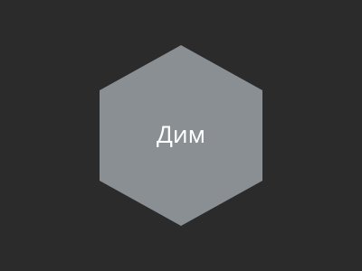

Про нас
Пасіка «Верховина» працює в Закарпатті з 1986 року. Ми тримаємо 120 сімей бджіл і власний цех із виготовлення рамок.

Пасіка «Верховина» працює в Закарпатті з 1986 року. Ми тримаємо 120 сімей бджіл і власний цех із виготовлення рамок.
